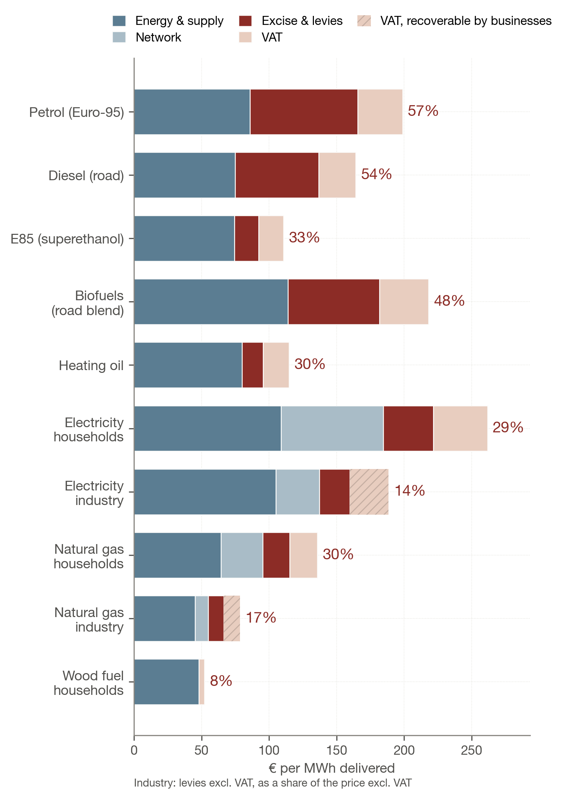
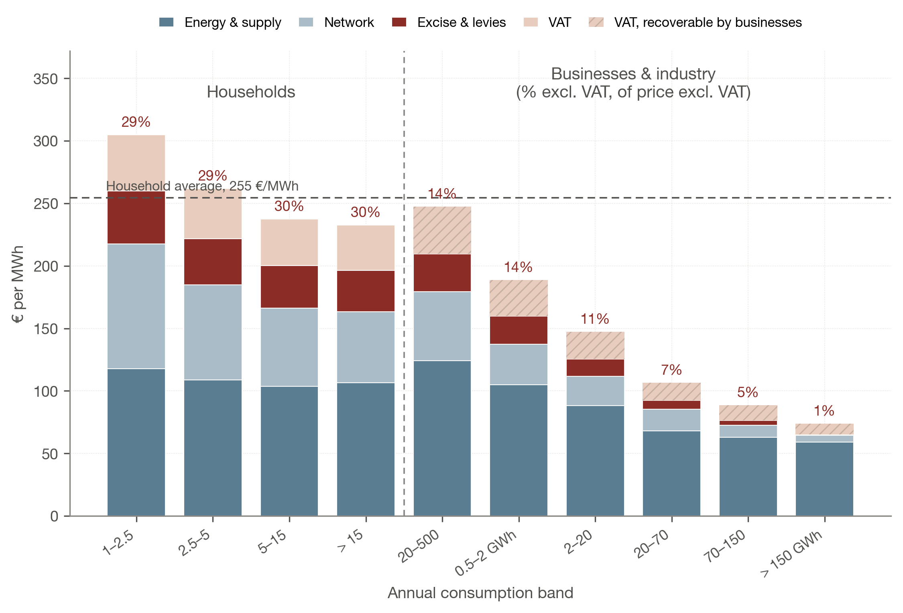
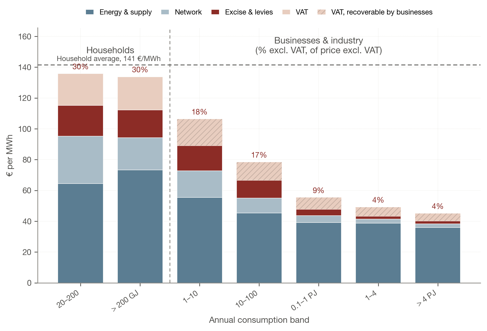
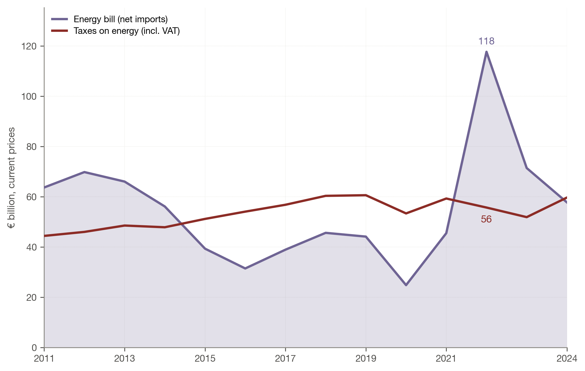

Les taxes sur l'énergie : qui paie quoi, et quel signal prix entre les énergies
Ce qu'on paie en plus de l'énergie (accise, TVA, CTA, quotas du marché carbone européen et ETS2) et comment se décompose une facture d'électricité, de gaz ou de carburant entre énergie, réseau et taxes : 57 % de taxes sur l'essence, environ 30 % sur l'électricité et le gaz d'un ménage, 1 % pour un très gros site industriel. Qui paie (tarifs réduits, exonérations, TVA récupérée par les entreprises), ce que ça rapporte (20 à 60 Md€ selon ce qu'on compte), la France face à ses voisins, et le signal prix par tonne de CO₂ : environ 300 €/t sur l'essence, 90 sur le gaz, et une électricité plus taxée au MWh que le gaz.
1. La question et la réponse
La question. Quand on paie un plein d’essence, une facture d’électricité ou une facture de gaz, quelle part va à l’État ? Et cette fiscalité pousse-t-elle vers les énergies qui émettent le moins de CO₂ ?
La réponse, en trois phrases. En France en 2025, les taxes font 57 % du prix de l’essence, environ 30 % des factures d’électricité et de gaz d’un ménage, mais à peine 1 % du prix de l’électricité d’un très gros site industriel : d’un produit et d’un client à l’autre, c’est l’impôt qui varie le plus, pas le coût de l’énergie. Ces taxes rapportent entre 20 et 60 milliards d’euros par an selon ce qu’on compte, du même ordre que ce que la France paie pour importer son énergie. Rapportées à la tonne de CO₂, elles sont très inégales : environ 300 € par tonne sur l’essence, 90 € sur le gaz, presque rien pour un site industriel soumis au marché du carbone, et l’électricité, peu carbonée en France, est plus taxée au MWh que le gaz.
Le plan. La section 2 présente les familles de prélèvements. La section 3 décompose la facture de chaque énergie entre énergie, réseau et taxes. La section 4 dit qui paie quoi, des ménages aux industriels exonérés. La section 5 donne les recettes, la section 6 compare la France à ses voisins. La section 7 regarde le signal prix entre énergies, par MWh et par tonne de CO₂. La section 8 dit ce que cela change pour les mini-projets du cours.
2. Ce qu’on paie en plus de l’énergie : cinq familles
Une facture d’énergie additionne quatre postes : l’énergie elle-même (avec la fourniture, c’est-à-dire la marge et les frais du vendeur), le réseau, les accises et contributions, et la TVA. À côté, un cinquième prélèvement ne figure sur aucune facture : le prix du carbone payé par les grandes installations.
L’accise est un impôt fixé par unité physique : par litre, par MWh. Elle ne dépend pas du prix de l’énergie. En France, elle regroupe depuis 2022 les anciennes taxes intérieures de consommation : la TICPE sur les produits pétroliers, la TICGN sur le gaz naturel, la TICFE sur l’électricité. Une directive européenne (2003/96/CE) fixe des minima : par exemple 0,5 €/MWh pour l’électricité à usage professionnel. Chaque pays taxe au-dessus.
La composante carbone. De 2014 à 2018, la France a augmenté ses accises sur les énergies fossiles en fonction de leur contenu en CO₂ : 7 €/t en 2014, puis 14,5, 22, 30,5 et enfin 44,6 €/t en 2018. La loi visait 100 €/t en 2030. Après le mouvement social de l’automne 2018, les tarifs ont été gelés au niveau de 2018 (DGEC, 2026). Cette composante n’est qu’une part de chaque tarif : elle s’est ajoutée à des accises qui existaient déjà.
La TVA est de 20 % sur l’énergie. Depuis le 1er août 2025, le taux normal s’applique à toute la facture d’électricité et de gaz, abonnement compris. La TVA se calcule aussi sur les accises : on paie une taxe sur la taxe. Point essentiel : une entreprise récupère la TVA qu’elle paie. Pour elle, la TVA n’est pas un coût, et il faut raisonner hors TVA.
Les contributions. La CTA (contribution tarifaire d’acheminement) finance les retraites des industries électriques et gazières. Elle se calcule en pourcentage du tarif de réseau et rapporte 1,5 Md€ en 2024 (SDES).
Le réseau n’est pas un impôt. Le TURPE (tarif d’utilisation des réseaux publics d’électricité) et son équivalent pour le gaz paient le transport et la distribution. C’est un prix régulé, pas une taxe. Le ranger dans les taxes ferait passer la part des prélèvements sur l’électricité d’un ménage de 29,5 % à 58 %. La note sur les tarifs de réseau le détaille.
Le marché du carbone. Le SEQE (système d’échange de quotas d’émission de l’Union européenne, en anglais EU ETS) oblige les centrales électriques et les installations industrielles de plus de 20 MW thermiques à rendre un quota par tonne de CO₂ émise. Le quota s’achète aux enchères : 73,43 €/t en moyenne en 2025 (Commission européenne, 2026). Ce coût n’apparaît pas comme une ligne de facture : il entre dans le prix de l’électricité ou dans le coût de production de l’usine. Un second marché, l’ETS2, couvrira les combustibles du bâtiment et du transport routier. Son démarrage a été reporté de 2027 à 2028 (règlement (UE) 2026/667).
| Prélèvement | Assiette | Qui le paie | Ordre de grandeur |
|---|---|---|---|
| Accise | MWh ou litre | tous, avec des tarifs réduits | de 0 à 77 €/MWh selon le produit |
| TVA | prix, taxes comprises | ménages (récupérée par les entreprises) | 20 % |
| CTA | tarif de réseau | électricité et gaz | 1,5 Md€ par an |
| Quota SEQE | tonne de CO₂ | centrales, sites de plus de 20 MW | 73 €/t en 2025 |
| Réseau (TURPE) | puissance et MWh | tous les clients raccordés | prix régulé, pas un impôt |
3. La facture, énergie par énergie

La figure compare toutes les énergies dans la même unité, l’euro par MWh. Le tableau donne les mêmes chiffres, et le prix dans l’unité de tous les jours.
| France 2025 | Essence | Gazole | Fioul | Élec. ménage | Gaz ménage | Bois ménage | Élec. industrie | Gaz industrie |
|---|---|---|---|---|---|---|---|---|
| Part des taxes | 57 % | 54 % | 30 % | 29,5 % | 30 % | 7,5 % | 14 % | 17 % |
| Prix TTC (€/MWh) | 199 | 164 | 115 | 262 | 136 | 52 | 189 (160 HT) | 78 (66 HT) |
| Dans l’unité d’usage | 1,73 €/L | 1,62 €/L | 1,13 €/L | 0,26 €/kWh | 0,136 €/kWh | 0,19 €/kWh | 0,078 €/kWh |
Sources : Eurostat pour l’électricité et le gaz, Weekly Oil Bulletin de la Commission européenne pour les carburants (moyenne des 52 semaines), SDES pour le bois. Pour l’industrie (un site de 0,5 à 2 GWh par an en électricité, de 10 à 100 TJ en gaz), la part est calculée hors TVA, sur le prix hors TVA, puisque la TVA est récupérée.
L’électricité d’un ménage (2,5 à 5 MWh par an) coûte 262 €/MWh. Elle se décompose en 108,8 € d’énergie, 75,9 € de réseau, 37,2 € d’accise et de contributions (dont 30,4 € d’accise, le reste étant surtout la CTA) et 40,1 € de TVA (Eurostat). L’énergie fait donc à peine plus de 40 % du prix.
Le gaz d’un ménage coûte 136 €/MWh : 64,5 € d’énergie, 30,8 € de réseau, 19,9 € d’accise et de contributions, 20,6 € de TVA.
Les carburants n’ont pas de poste réseau, mais une accise lourde. Sur un MWh d’essence, l’énergie et la distribution font environ 86 €, l’accise environ 80 €, la TVA environ 33 €. L’accise pèse donc presque autant que le produit.
Le bois fait le contraste. Il n’est pas soumis à l’accise, c’est écrit dans la loi (article L. 312-9 du code des impositions). Ses 7,5 % sont de la TVA, à un taux réduit de 10 %, et une partie du bois brûlé ne passe par aucune vente.
Le kérosène des vols internationaux et le fioul des navires sont à 0 % : ni accise, ni TVA. En 2024, ces « soutes internationales » représentent 80 TWh, environ 12 % des produits pétroliers comptés en France (SDES). C’est le plus gros trou de l’assiette fiscale de l’énergie.
4. Qui paie : ménages, industrie, exonérations
4.1 Plus on consomme, moins on paie de taxes par MWh

| Électricité, France 2025, €/MWh | Ménage 1 à 2,5 MWh/an | Ménage 2,5 à 5 MWh/an | Site de plus de 150 GWh/an | Rapport |
|---|---|---|---|---|
| Énergie et fourniture | 117,9 | 108,8 | 59,1 | 2 |
| Accises et taxes, hors TVA | 42,3 | 37,1 | 0,7 | 60 |
| TVA | 45,0 | 40,1 | 8,7 (récupérée) | |
| Part des prélèvements | 29 % du TTC | 29,5 % du TTC | 1 % du prix HT |
L’énergie coûte deux fois moins cher au très gros industriel. L’accise, elle, lui coûte soixante fois moins. Son plancher, 0,5 €/MWh, est le minimum de la directive européenne. Le réseau baisse aussi avec la taille : un gros site est raccordé en haute tension.

Le gaz suit la même pente. La part des taxes passe de 30 % pour un ménage à 4 % pour les plus gros sites (plus de 1 PJ par an, soit plus de 280 GWh).
4.2 Les tarifs réduits et les exonérations
Le gradient n’est pas un effet de volume. Il vient de tarifs réduits inscrits dans la loi pour protéger la compétitivité de l’industrie (DGEC, 2026) :
- électricité des sites électro-intensifs : de 5,5 €/MWh à 0,5 €/MWh selon l’intensité électrique (la consommation d’électricité rapportée à la valeur ajoutée) et l’exposition à la concurrence internationale, contre 26,58 €/MWh au tarif normal des entreprises en 2026 ;
- gaz des sites soumis au SEQE : 1,52 €/MWh, contre 16,39 €/MWh au tarif normal. Ces sites paient déjà leurs quotas ;
- tarif nul pour les « doubles usages » : l’électrolyse, la réduction chimique, les procédés métallurgiques, où l’énergie sert aussi de matière ;
- exonération du gaz brûlé pour produire de l’électricité : la production électrique fossile est taxée par le SEQE, pas par l’accise ;
- hors champ : l’hydrogène, dont l’usage énergétique n’est pas taxé, et le bois.
4.3 Les ménages paient la plus grosse part
En France, les ménages acquittent 59,6 % des taxes sur l’énergie, contre 47,4 % en Allemagne (Eurostat, compte ventilé par payeur). Cette fiscalité est régressive : elle pèse plus lourd, en proportion, pour les ménages modestes. Le budget vert du projet de loi de finances 2026 chiffre l’accise à 580 € par ménage et par an, soit 2,1 % du revenu des 20 % les plus modestes, contre 0,7 % pour les 20 % les plus aisés.
5. Combien ça rapporte
« Les taxes sur l’énergie rapportent X milliards » a plusieurs réponses justes. Tout dépend de ce qu’on compte.
| France 2024 | Md€ | Ce qu’on compte | Source |
|---|---|---|---|
| Toutes taxes, TVA comprise | 59,7 | toutes administrations | SDES |
| … nettes des subventions à l’énergie | 52,5 | idem | SDES |
| Hors TVA | 43,6 | toutes administrations | Eurostat |
| Accises, part du budget de l’État | 20,2 | État seul | PLF 2026 |
De 59,7 à 43,6 Md€, l’écart est la TVA. De 43,6 à 20,2 Md€, c’est la part reversée aux régions, aux départements et à l’agence de financement des infrastructures de transport (AFITF) : la moitié de l’ancienne TICPE n’arrive jamais au budget de l’État. « Ce que l’État encaisse » : 20 Md€. « Ce que la puissance publique prélève sur l’énergie » : 44 Md€ hors TVA, 60 avec.
Hors TVA, ces taxes font 1,49 % du PIB et 3,3 % des prélèvements obligatoires, comme en Allemagne (1,48 % du PIB, 64,2 Md€) (Eurostat).

Face à la facture énergétique. En 2024, la France a dépensé 57,8 Md€ nets pour importer son énergie : du même ordre que les 59,7 Md€ de taxes. Mais les deux courbes ne se ressemblent pas. Les taxes suivent les volumes consommés et bougent de 10 % en dix ans. La facture suit les prix mondiaux : 25 Md€ en 2020, 118 Md€ en 2022.
2022, le bouclier tarifaire. Pendant la crise, l’État a baissé ses taxes au lieu d’encaisser le choc : remise à la pompe, accise sur l’électricité ramenée au minimum européen. Les taxes sur l’électricité sont passées de 15,8 Md€ en 2021 à 8,9 en 2022 et 6,8 en 2023, avant de remonter à 13,4 en 2024 (SDES).
6. Et ailleurs en Europe
Électricité d’un ménage de référence (2,5 à 5 MWh par an), 2025, en €/MWh (Eurostat) :
| Énergie | Réseau | Taxes, TVA comprise | Prix TTC | Part des taxes | |
|---|---|---|---|---|---|
| France | 109 | 76 | 77 | 262 | 29,5 % |
| Allemagne | 148 | 113 | 124 | 385 | 32 % |
| Italie | 180 | 44 | 89 | 313 | 28 % |
| Espagne | 111 | 71 | 82 | 264 | 31 % |
| Danemark | 96 | 79 | 166 | 341 | 49 % |
| Suède | 69 | 107 | 94 | 269 | 35 % |
| Moyenne UE | 125 | 82 | 83 | 289 | 29 % |
Trois enseignements :
- la part des taxes est proche de 30 % dans la plupart des pays. Le Danemark fait exception, avec près de la moitié du prix ;
- l’électricité française est sous la moyenne européenne (262 contre 289 €/MWh), et elle l’est sur les trois postes : énergie, réseau et taxes ;
- chaque pays range des choses différentes dans ses taxes. L’Italie finance le soutien aux renouvelables par un prélèvement sur la facture (32 €/MWh).
Pour le gaz d’un ménage, la part des taxes est aussi d’environ 30 % en France, en Allemagne et en moyenne européenne.
7. Le signal prix entre énergies
7.1 Par MWh : chaque énergie a son taux
Rapporter les recettes aux volumes donne un taux implicite, taxes comprises (France 2024, SDES) :
| France 2024 | Volume (TWh) | Taxes (Md€) | Taux implicite (€/MWh) |
|---|---|---|---|
| Biocarburants | 38 | 4,0 | 105 |
| Pétrole (soutes comprises) | 666 | 36,4 | 55 (62 sans les soutes) |
| Électricité | 398 | 13,4 | 34 |
| Gaz naturel | 263 | 5,6 | 21 |
| Biomasse, chaleur, autres | 208 | 0,2 | 1 |
Le pétrole rapporte 6,5 fois plus que le gaz : il est consommé 2,5 fois plus, et taxé 2,6 fois plus par MWh.
7.2 Par tonne de CO₂ : un gradient très inégal
Un signal prix « climat » taxerait chaque tonne de CO₂ au même prix. On peut le vérifier en divisant le tarif d’accise (DGEC, 2026) par le CO₂ émis à la combustion (facteurs par défaut du GIEC, 2006 : 0,202 t par MWh de gaz, 0,267 t pour le gazole et le fioul, 0,249 t pour l’essence).
| Produit, tarif de février 2026 | Accise (€/MWh) | Accise par tonne de CO₂ |
|---|---|---|
| Essence SP95-E10 | 75,4 | ≈ 300 €/t |
| Gazole routier | 60,75 | ≈ 230 €/t |
| Gaz naturel, tarif normal | 16,39 | ≈ 90 €/t |
| Fioul domestique | 16,39 | ≈ 60 €/t |
| Gaz d’un site soumis au SEQE | 1,52 | ≈ 8 €/t, plus le quota (73 €/t en 2025) |
| Kérosène des vols internationaux | 0 | 0 |
Le gaz est taxé au MWh de PCS (pouvoir calorifique supérieur, qui compte la chaleur de condensation de l’eau), environ 11 % de plus que le PCI utilisé pour les autres produits : le calcul en tient compte.
La tonne de CO₂ coûte donc cinq fois plus cher dans un réservoir d’essence que dans une chaudière au fioul. Le système ne suit pas le CO₂ : il suit l’histoire de chaque produit et la compétitivité des secteurs.
7.3 L’électricité est taxée plus que le gaz
En 2026, l’accise sur l’électricité d’un ménage est de 30,85 €/MWh, près du double de celle du gaz (16,39 €/MWh). Pourtant, le kWh électrique français émet plusieurs fois moins de CO₂ que le kWh de gaz. L’accise ne pousse donc pas vers l’électrification.
La comparaison doit se faire par MWh de chaleur utile. Prenons une chaudière au gaz de rendement 90 % et une pompe à chaleur qui fournit 3 kWh de chaleur par kWh d’électricité (hypothèses de calcul) :
- chaudière au gaz : 16,39 / 0,9 ≈ 18 € d’accise par MWh de chaleur ;
- pompe à chaleur : 30,85 / 3 ≈ 10 € ;
- radiateur électrique : 30,85 €, le plus taxé des trois.
Avec une pompe à chaleur, l’électricité redevient la moins taxée. Avec un radiateur, elle reste la plus taxée.
7.4 Les substituts bas carbone paient plus au MWh
Le même éthanol est taxé 75,4 €/MWh quand il est mélangé à l’essence SP95-E10, et 17,9 €/MWh quand il est vendu en superéthanol E85 : un facteur 4 selon la pompe. Les biocarburants incorporés supportent la même accise que le gazole, mais une TVA sur un produit plus cher : 105,8 € de taxes par MWh en 2024, contre 90,5 € pour le gazole fossile. Le biométhane injecté dans le réseau paie 48,0 €/MWh, contre 37,1 € pour le gaz fossile (SDES, Eurostat).
Idée reçue. « Les biocarburants sont moins taxés que le gazole. » En part du prix, oui (45 % contre 53 %). En euros par MWh, non : la part est plus faible parce que le produit est plus cher.
Autre idée reçue. « L’accise sur l’électricité a augmenté de 19 % en août 2025. » Elle est passée de 25,09 à 29,98 €/MWh pour les ménages, mais une partie de la hausse est un changement de case : la péréquation des tarifs outre-mer, jusque-là payée par le tarif de réseau, est passée dans l’accise.
8. Ce que ça change pour les mini-projets
La chaudière d’une usine : électrique ou au gaz ? Le mini-projet sur la vapeur industrielle compare une chaudière au gaz et une chaudière électrique. Le modèle du cas compte le prix de l’énergie et le prix du CO₂. Les taxes et le réseau changent le verdict :
- raisonner hors TVA : l’usine la récupère ;
- pour un site moyen, l’électricité porte beaucoup plus de réseau et de taxes que le gaz. Électricité, site de 2 à 20 GWh par an : 88,2 €/MWh d’énergie, 23,4 € de réseau, 13,8 € de taxes hors TVA. Gaz, site de 10 à 100 TJ par an (2,8 à 28 GWh) : 45,3 € d’énergie, 9,7 € de réseau, 11,5 € de taxes (Eurostat, France 2025). Réseau et taxes réunis : 37 €/MWh pour l’électricité, 21 €/MWh pour le gaz ;
- le prix du CO₂ s’ajoute au gaz : 0,202 t de CO₂ par MWh. À 45 €/t, la valeur de l’ETS2 que le cas prend par défaut, cela fait 9 €/MWh de gaz. Au prix moyen du quota SEQE en 2025 (73 €/t), 15 €/MWh ;
- le régime dépend de la taille : une chaudière de 1,3 MW relève de l’ETS2 (à partir de 2028), pas du SEQE, réservé aux sites de plus de 20 MW thermiques. Un site soumis au SEQE paie en échange une accise sur le gaz réduite à 1,52 €/MWh ;
- un site électro-intensif peut obtenir une accise sur l’électricité de 0,5 à 5,5 €/MWh, au lieu de 26,58 €/MWh.
La note sur la chaleur industrielle et la note sur le stockage de chaleur donnent le reste du contexte.
Le rôle « qui paie, qui gagne ». Dans tout mini-projet, le modèle optimise un coût du système, sans les taxes. La planche « qui paie, qui gagne » doit dire ce qu’il ne voit pas :
- l’accise et la TVA, très différentes selon le client et l’énergie (un ménage paie 30 % de taxes, un très gros site 1 %) ;
- le tarif de réseau, qui n’est pas une taxe mais pèse autant qu’elle sur la facture d’un ménage ;
- les exonérations : l’électricité consommée par un électrolyseur est à accise nulle (double usage), et l’hydrogène n’est pas taxé ;
- le prix du carbone, payé par les centrales et les grands sites, et intégré au prix de l’électricité.
Une ligne chiffrée suffit souvent : « au tarif normal, l’accise ajoute 26,58 € par MWh d’électricité à ce site ; avec le tarif électro-intensif, 0,5 € ». Pour un électrolyseur ou une batterie, le poste qui reste est le réseau : voir la note sur les tarifs de réseau. Pour le financement et le coût du capital, voir la note sur le financement de la transition.
9. Ce qu’il faut retenir
Le prix d’une énergie, c’est surtout l’impôt et le réseau. Pour un ménage, l’énergie fait à peine plus de 40 % du prix de l’électricité et un peu moins de la moitié du prix de l’essence. Les taxes font 57 % de l’essence, environ 30 % de l’électricité et du gaz, 7,5 % du bois.
Le gradient selon le client est énorme. Un ménage paie 37 €/MWh d’accises et de taxes hors TVA sur son électricité, un site de plus de 150 GWh 0,7 €/MWh. Une entreprise récupère la TVA : on raisonne hors TVA.
Il n’y a pas « un » montant des recettes. 20 Md€ pour le budget de l’État, 44 Md€ hors TVA pour toutes les administrations, 60 Md€ avec la TVA (2024).
Le signal prix ne suit pas le CO₂. Environ 300 €/t sur l’essence, 90 €/t sur le gaz, 60 €/t sur le fioul, presque rien pour l’industrie soumise au SEQE (qui paie ses quotas), zéro pour le kérosène international. L’électricité, peu carbonée en France, est plus taxée au MWh que le gaz : seule une pompe à chaleur renverse l’écart.
10. Sources
- Code des impositions sur les biens et services, articles L. 312-9, L. 312-35, L. 312-55, L. 312-58, L. 312-66, L. 312-76, L. 312-83, L. 312-84, https://www.legifrance.gouv.fr/codes/texte_lc/LEGITEXT000044595989/.
- Commission européenne, Weekly Oil Bulletin, prix des carburants avec et sans taxes, 2025, https://energy.ec.europa.eu/data-and-analysis/weekly-oil-bulletin_en.
- Commission européenne, avis C/2026/2992 sur les prix des carburants d’aviation de 2025 (prix moyen des enchères de quotas en 2025, 73,43 €/t).
- DGEC et DLF, Guide 2026 sur la fiscalité des énergies, 2026 (TVA, CTA, composante carbone, tarifs réduits, annexe 3 en €/MWh), https://www.ecologie.gouv.fr/politiques-publiques/fiscalite-energies.
- Directive 2003/96/CE sur la taxation de l’énergie ; directive (UE) 2023/959 (révision du SEQE et création de l’ETS2) ; règlement (UE) 2026/667 (report de l’ETS2 à 2028).
- Eurostat, composantes du prix de l’électricité et du gaz, ménages
(
nrg_pc_204_c) et non-ménages (nrg_pc_205_c), 2025 ; recettes des taxes environnementales (env_ac_tax,env_ac_taxind2), 2024, https://ec.europa.eu/eurostat/web/energy/database. - GIEC, Lignes directrices 2006 pour les inventaires nationaux de gaz à effet de serre, volume 2, chapitre 1, tableau 1.4 (facteurs d’émission par défaut).
- PLF 2026, Évaluation des voies et moyens, tome I (part de l’État dans les accises), et Rapport sur l’impact environnemental du budget de l’État, partie II (régressivité de l’accise), https://www.budget.gouv.fr/documentation/plf-2026-budget-vert-spafte/plf-2026-rapport-sur-limpact.
- SDES, Bilan énergétique de la France (facture énergétique et taxes par énergie, TVA comprise), 2025, https://www.statistiques.developpement-durable.gouv.fr/bilan-energetique-de-la-france-en-2025-donnees-provisoires.
11. Vidéos, billets et posts sur le même sujet
Des vidéos courtes, des billets de blog et des posts LinkedIn de l’auteur reprennent des points de cette note.
- Taxes sur l’énergie en France : une vision d’ensemble (post LinkedIn repris sur le blog, avec figures et sources ; le post sur LinkedIn) : ce qu’un consommateur paie par MWh d’électricité, de gaz, de bois ou de carburant, et la part de l’État.
- Pétrole, gaz, électricité : ce que chacun coûte au pays, ce qu’on en consomme, ce qu’il rapporte en taxes (post LinkedIn repris sur le blog, avec figures et sources ; le post sur LinkedIn) : la facture énergétique de la France, la consommation et les recettes fiscales, vecteur par vecteur, de 2012 à 2024.
- Les taxes sur l’énergie, par usage et par vecteur (post LinkedIn repris sur le blog, avec figures et sources ; le post sur LinkedIn) : les taxes ramenées au service rendu (100 km, chaleur utile) plutôt qu’au MWh : le classement change.
- Inégalité énergétique et transition (post LinkedIn repris sur le blog, avec figures et sources ; le post sur LinkedIn) : la part du revenu que les ménages consacrent à l’énergie, et la précarité énergétique.
- Les e-carburants, le prix du billet, et l’accise que l’avion ne paie pas (post LinkedIn repris sur le blog, avec figures et sources ; le post sur LinkedIn) : l’aviation, qui ne paie pas d’accise sur le kérosène.
Télécharger la version PDF (les liens y restent actifs).
Notes voisines
- Financer la transition : le coût du capital, les contrats, et qui paie au bout du compte
- Investir dans la transition énergétique : combien, dans quoi, où, et combien il en faudrait
- Le tarif d'accès au réseau électrique : ce qu'il paie, comment il est construit, ce qu'il coûte en Europe
- La chaleur des usines : combien, à quelle température, et ce que l'électricité peut en faire
- Stocker la chaleur dans l'industrie : comment ça marche, ce que ça coûte, où on en est